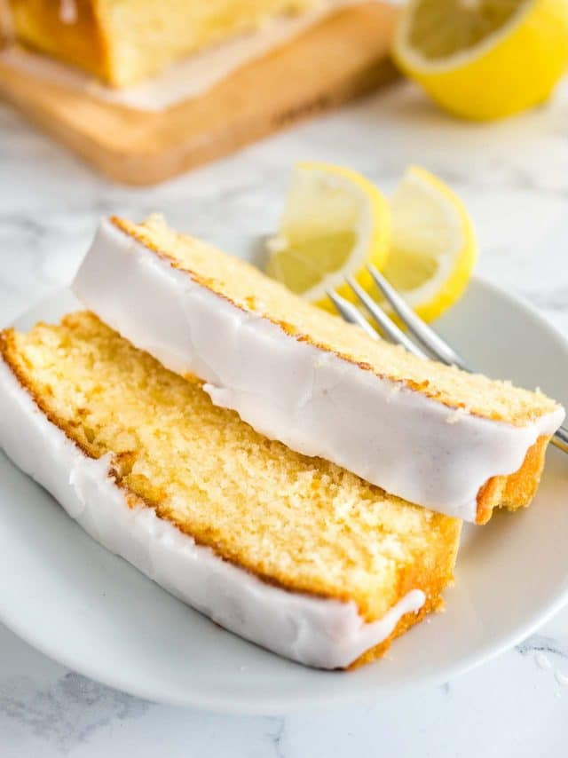
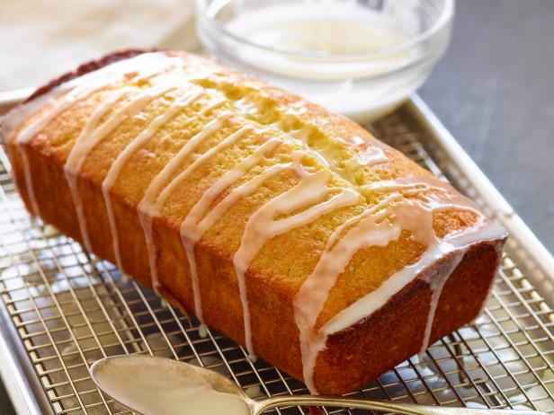

This incredible lemon cake is for serious lemon lovers! It's the perfect spring and summer cake, but the bright, citrus-y flavors are also perfect for chasing away the winter blues.
Step 1:
Preheat oven to 350 degrees.
Step 2:
Coat the inside of a 10-inch, 10 - 12 cup capacity tube pan or Bundt pan with butter and flour or floured baking spray.
Step 3:
In a large mixing bowl, add the butter, sugar, salt, and lemon extract. Beat until the mixture is light and fluffy. Add the eggs to the mixture one at a time, and beat each egg completely into the mixture before adding the next.
Step 4:
Add the baking powder and a little flour to the wet mixture, and beat just until combined. Then, alternate additions of milk and flour, mixing well in between additions until it›s all incorporated and batter is smooth. Finally, stir* in half of the grated lemon zest (save the other half of the zest for the glaze).
Step 5:
Pour batter into prepared pan. Bake 40 minutes and check to determine how much more baking time is needed to avoid over-baking. Bake 45 to 55 minutes - just until a toothpick or skewer inserted into the thickest part of the cake comes out clean.
Step 6:
While cake is baking, prepare the glaze: Pour lemon juice and granulated sugar into a small bowl and stir well until sugar crystals dissolve. Stir the other half of the lemon zest.
Step 7:
When cake has finished baking, remove from oven and allow to cool in the pan for about ten (10) minutes.
Step 8:
If needed, gently shake the pan or use a butter knife to loosen the cake from the sides of the pan. Remove cake from the pan by placing a serving plate over the top of the pan and gently inverting the pan so they cake rests on the serving plate.
Step 9:
While cake is still warm, slowly spoon or brush a layer of the glaze all over the cake. Allow the first layer of glaze to sink in, then repeat with the rest of the glaze.
Step 10:
Garnish the warm, freshly-glazed cake with more lemon zest and allow the cake to cool completely before cutting.
Step 11:
If making ahead: Cover cake completely and store at room temperature overnight or up to two days. Refrigerate if keeping longer.
https://baconfatte.com/lemon-cake/